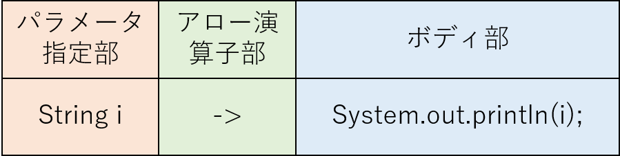

ラムダ式とはJava8で追加された関数型の言語機能です。これは、Java7以前で使われていた匿名クラスの構文を簡潔に記述するためのもので、 匿名クラスでの記述は簡単な処理を表現するためにもコード行が多くなりすぎる問題がありました。
// ソース1
import java.util.function.*;
public class Test {
public static void main(String... args) {
Consumer<Object> c = new Consumer<Object>() {
@Override
public void accept(Object o) {
System.out.println(o);
}
};
c.accept("hello");
}
}
上のソース1では、Consumerインターフェースのacceptメソッドを実装する匿名クラスを生成しています。これによって変数cにはある標準出力をする 処理の中身を記述することができました。
// ソース2
import java.util.function.*;
public class Test {
public static void main(String... args) {
Consumer<Object> c2 = (Object o) -> System.out.println(o.toString());
c2.accept("hello");
}
}上のソース2ではソース1と同じ処理をラムダ式を使って記述しています。これによってより簡潔に、処理自体を変数に格納することができました。
ラムダ式が4行目の=演算子の右辺で使われています。
ラムダ式の記法は3つに分けられます。->の前のパラメータ指定部、->のアロー演算子部、->のあとのボディ部です。
パラメータ指定部では、ラムダ式の型が引数を取る場合、引数を記述します。
ラムダ式の記述は省略可能な部分があります。
// ソース3
import java.util.function.*;
public class Test {
public static void main(String... args) {
Consumer<Integer> c1 = (Integer i) -> System.out.println(i);
Consumer<Integer> c2 = (i) -> System.out.println(i);
Consumer<Integer> c3 = i -> System.out.println(i);
// Consumer<Integer> c4 = (int i) -> System.out.println(i); // コンパイルエラー
// Consumer<Integer> c4 = Integer i -> System.out.println(i); // コンパイルエラー
}
}上のソース3のパラメータ指定部では、引数が一つの場合、変数c2のように型を省略できます。
また、その場合、変数c3のように括弧を省略できます。
型の指定にはプリミティブ型は指定できません。
アロー演算子部には->を必ず記述してください
ボディ部には、処理の内容を記述します。
// ソース4
import java.util.function.*;
public class Test {
public static void main(String... args) {
Function<Integer, Integer> c1 = i -> { return i*2;};
Function<Integer, Integer> c2 = i -> i*2;
// Function<Integer, Integer> c3 = i -> { i*2 }; // コンパイルエラー
// Function<Integer, Integer> c1 = i -> return i*2; // コンパイルエラー
}
}上のソース4のボディ部では、変数c2のように波括弧とreturn文を同時に省略することができます
戻り値があるときはどちらか片方のみ記述することは許されていません。
ラムダ式には型があり、今回の実験では、4つの関数型インターフェースを取り扱います。
関数型インターフェースとは、ラムダ式が記述可能なインターフェースのことです。 java.util.function などJavaで標準で提供されるものもありますが、ユーザーが作成することも可能です。
今回の実験では、Consumerインターフェース、Functionインターフェース、Predicateインターフェース、Supplierインターフェースを学習します。
どのインターフェースがどのような作用をするのかは事後テストで出てくるのでOracleのAPIドキュメントで学習してください
以下それぞれのサンプルコード
// ソース5
import java.util.function.*;
public class Test {
public static void main(String... args) {
// Integerを受け取り標準出力に出力するConsumer
Consumer<Integer> c = i -> System.out.println(i);
// Integerを受け取り2倍した値を返すFunction
Function<Integer, Integer> f = i -> { return i*2;};
// Integerを受け取り2の倍数かどうかを判別し、boolean値を返すPredicate
Predicate<Integer> p = i -> i%2 == 0;
// Doubleの円周率を返すSupplier
Supplier<Double> s = () -> 3.14;
c.accept(1);
System.out.println(f.apply(2));
System.out.println(p.test(2));
System.out.println(s.get());
}
}ラムダ式の学習は以上です